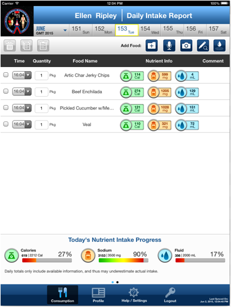

The Consumption page will be displayed once you log into the ISS FIT application. This page will provide you a summary of your consumed foods for the current day. The Consumption page is also the main screen in the ISS FIT application. Most of the actions described in this help guide will be performed from this screen. Below is a screenshot of the Consumption page for the Administrator role:
Below is a screenshot of the Consumption page for the non-Administrator role (the difference is that only Administrator can see the “Data” tab):

You may also use the calendar at the top of this page to view the items you consumed on previous days:
More details about the Consumption page are included under the help topic "View Consumption".